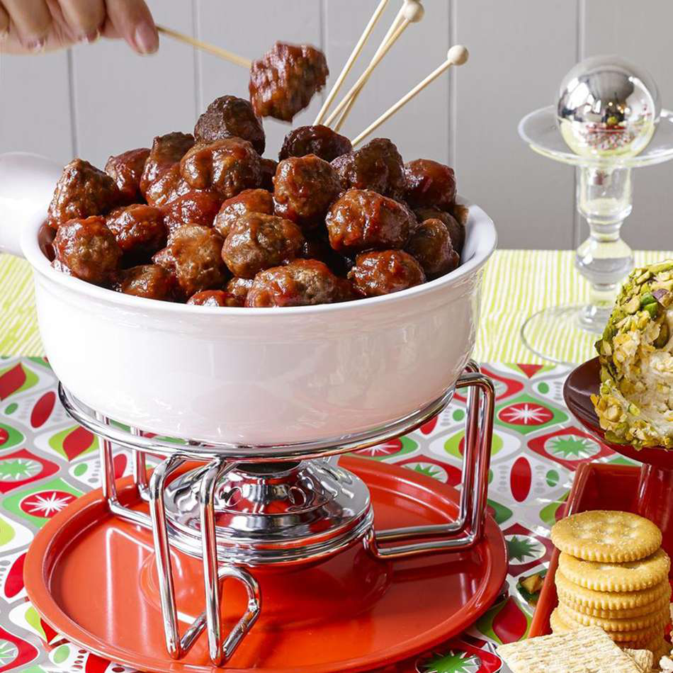

Cocktail Meatballs

These tasty cocktail meatballs will disappear quickly at your holiday
party. My mom makes them every year for New Year's Eve, and so do I. These
do very well in a slow cooker, as you can simmer them before serving and
keep them hot for the duration of your party.
Ingredients
- 1 pound (500 grams) lean ground beef
- ½ cup (75 grams) bread crumbs
- 3 tablespoons minced onion
- 2 tablespoons water
- 1 large egg
- 1 (8 ounce / 225 grams) can jellied cranberry sauce
- ¾ cup (205 grams) chili sauce
- 1 tablespoon brown sugar
- 1 ½ teaspoons lemon juice
Directions
Step by step directions:
-
Gather the ingredients. Preheat the oven to 350 degrees F (175 degrees
C).
-
Mix ground beef, bread crumbs, onion, water, and egg together in large
bowl. Form into small meatballs and arrange on a nonstick baking sheet.
Bake in the preheated oven for 20 to 25 minutes, turning once.
-
Stir cranberry sauce, chili sauce, brown sugar, and lemon juice together
in a large saucepan over low heat until smooth. Add meatballs; simmer
for 1 hour before serving.